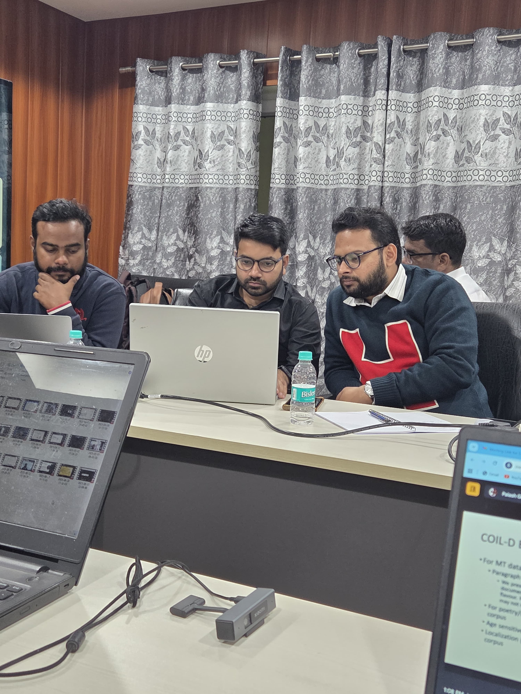
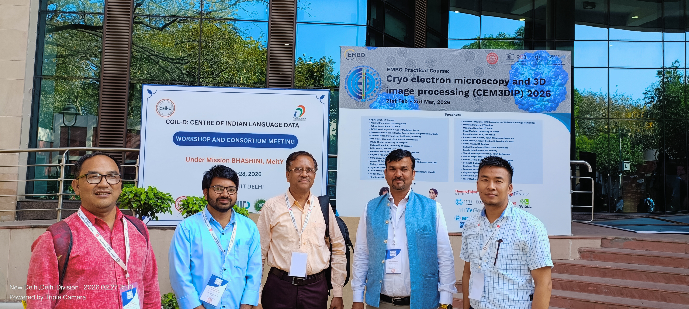
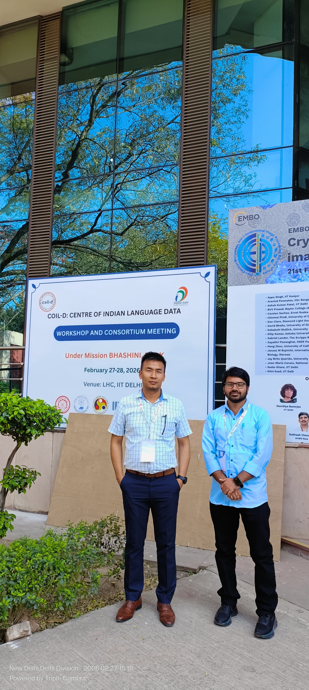

Indian Languages
Linguistic diversity, multilingualism and language resources.
LANGUAGE • LITERATURE • TRANSLATION • NLP
Language & Literature Researcher working at the intersection of Indian languages, translation, linguistic data and Natural Language Processing.

COIL-D · Mission Bhashini · MeitY
Centre for Linguistic Science and Technology, Indian Institute of Technology Guwahati
01 — ABOUT
I work at the intersection of language, literature, translation and linguistic data, with a growing focus on Natural Language Processing and Indian language technologies.
My academic background brings together English Literature and Comparative Indian Language and Literature, allowing me to approach language technology through both literary and linguistic perspectives.
My current work involves Indian language data, corpus creation, annotation, transcription, translation and data validation.
02 — RESEARCH
Linguistic diversity, multilingualism and language resources.
Translation across Indian languages, literature and linguistic contexts.
Corpus creation, annotation, transcription and data validation.
Natural Language Processing and language technology for Indian languages.
03 — WORK
My professional work combines language expertise with the creation and curation of resources for language technologies.
Centre of Indian Language Data — Mission Bhashini.
Creation and curation of linguistic datasets and corpora.
Validation and annotation of Indian language data.
Translation, transcription and multilingual content development.
04 — PRESENTATIONS
National Conference on India as a Linguistic Area — Dimensions of Diversity in North-East India, Gauhati University.
10th All India Conference of Linguistics and Folklore, Aligarh Muslim University.
Students Conference of Linguistics in India, IIT Kharagpur.
05 — GALLERY




06 — CONTACT
For research, collaboration, translation, language data and academic conversations.
saifullahsamar4593@gmail.com ↗